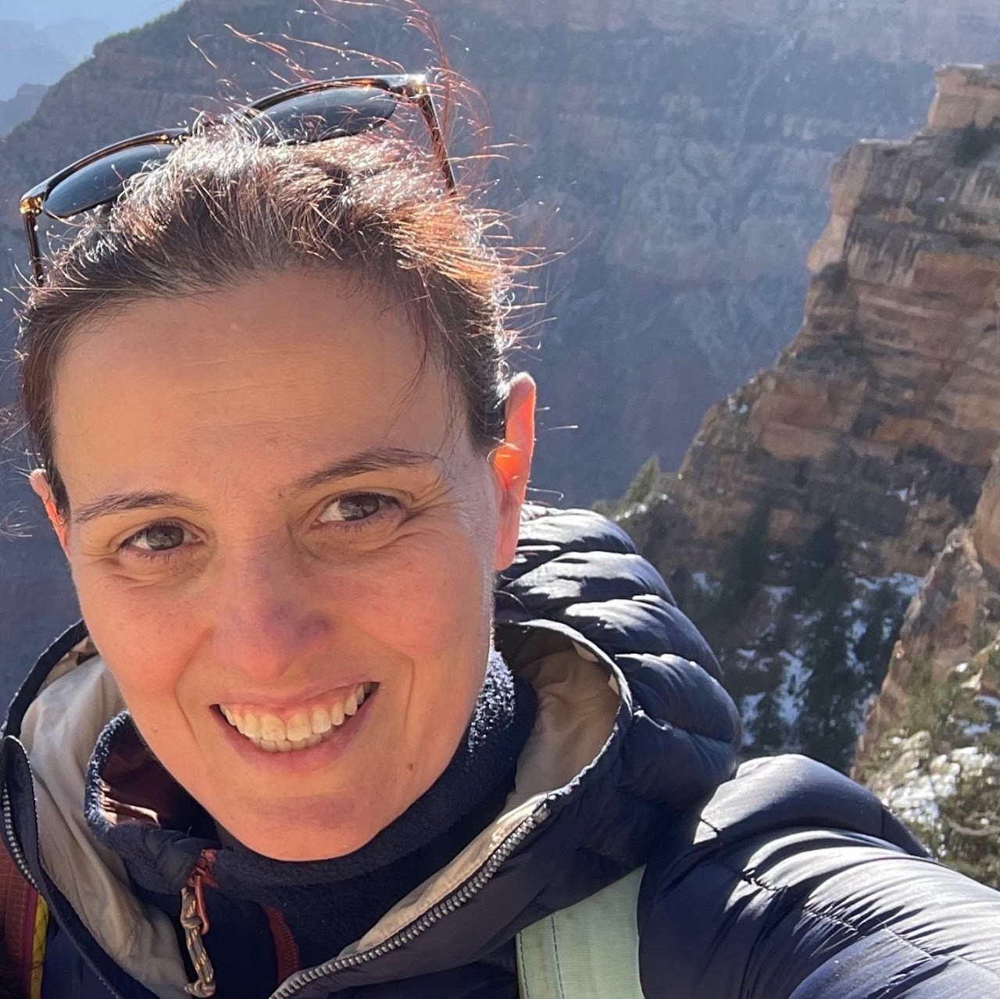

Our lab is involved in many community initiatives.
Check out what we've been up to!
Shout-out to current lab members who have served as
instructors:
Esin T.

Ye Z.

Jihoon C.

Sunnie K.

William Y.

Tyler Z.

Nobline Y.


The AI4ALL nonprofit, which Prof. Olga Russakovsky co-founded in 2017 together with
Prof. Fei-Fei Li and Dr. Rick Sommer, is a nonprofit working to increase diversity and
inclusion in AI by educating a diverse next generation of AI leaders.

The Laboratory Learning Program is a full-time, free research
experience in the sciences or engineering for high school students in NJ and PA who
are within a 50 mile radius to Princeton University (transportation is not provided and
this is not a residential program).
* only Visual AI
Lab members shown
Organized by: Polina Kirichenko, Vikram V. Ramaswamy, Kyle Buettner, Sina Malakouti, Tarun Kalluri, Manmohan Chandraker, Adriana Kovashka, Olga Russakovsky

Polina K.

Vikram R.

Olga R.
Organized by: Sukrut Rao, Indu Panigrahi, Sunnie S. Y. Kim, Vikram V. Ramaswamy, Rajat Sahay, Avinab Saha, Dahye Kim, Miguel-?ngel Fern?ndez-Torres, Lenka T?tkov?, Teresa Dorszewski, Bartlomiej Sobieski, Marina Gavrilova, Yuhui Zhang, Pushkar Shukla

Indu P.

Sunnie K.
Vikram R.
Organized by: Utkarsh Mall, Ye Zhu, Jacob Berv, Siavash Golkar, Katie Bouman, Subhransu Maji, David Fouhey
Ye Z.
Organized by: Adriana Romero-Soriano, Reyhane Askari, Melissa Hall, Michal Drozdzal, Ye Zhu, Agata Lapedriza, Arantxa Casanova, Negar Rostamzadeh, Utsav Prabhu, Pinar Yanardag
Ye Z.
Organized by: Adriana Romero-Soriano, Agata Lapedriza, Golnoosh Farnadi, Melissa Hall, Michal Drozdzal, Negar Rostamzadeh, Raesetje Sefala, Utsav Prabhu, Ye Zhu
Ye Z.
Organized by: Candice Schumann, Caner Hazirbas, Olga Russakovsky, Vikram V. Ramaswamy, Jerone Andrews, Alice Xiang, Susanna Ricco, Courtney Heldreth, Biao Wang, Cristian Canton Ferrer, Jess Holbrook
Olga R.
Vikram R.
Organized by: Upol Ehsan, Elizabeth Anne Watkins, Philipp Wintersberger, Carina Manger, Sunnie S. Y. Kim, Niels van Berkel, Andreas Riener, Mark O. Riedl
Sunnie K.
Organized by: Indu Panigrahi, Sunnie S. Y. Kim, Vikram V. Ramaswamy, Sukrut Rao, Stefan Kolek, Lenka Tetkova, Jawad Tayyub, Katelyn Morrison, Pushkar Shukla, Deepti Ghadiyaram
Indu P.
Sunnie K.
Vikram R.
Organized by: Gedas Bertasius, Rohit Girdhar, Zhiding Yu, Mohit Bansal, Xin Wang, Lucas Beyer, Gul Varol, Alaaeldin El-Nouby, Feng Cheng, Yan-Bo Lin, Jaemin Cho, Yi-Lin Sung, Md Mohaiminul Islam, Yue Yang, Soumitri Chattopadhyay, Ce Zhang, Tyler Zhu
Tyler Z.
Co-founded by Professor Olga Russakovsky
Organized by: Doris Antensteiner, Marah Halawa, Asra Aslam, Ivaxi Sheth, Sachini Herath, Ziqi Huang, Sunnie S. Y. Kim, Aparna Akula, Xin Wang
Organized by: Doris Antensteiner, Marah Halawa, Asra Aslam, Ivaxi Sheth, Sachini Herath, Ziqi Huang, Sunnie S. Y. Kim, Aparna Akula, Xin Wang
Sunnie K.
Organized by: Sunnie S. Y. Kim, Vikram V. Ramaswamy, Ruth Fong, Filip Radenovic, Abhimanyu Dubey, Deepti Ghadiyaram
Sunnie K.
Vikram R.

Ruth F.
Organized by: Kazuki Kozuka, Edward Vendrow, Ehsan Adeli, Jihoon Chung, Olga Russakovsky, Madeleine Grunde-McLaughin, Ranjay Krishna, Juan Carlos Niebles, FeiFei Li
Jihoon C.
Olga R.
Organized by: Sara Hooker, Rosanne Liu, Pablo Samuel Castro, Fatemehsadat Mireshghallah, Sunipa Dev, Benjamin Rosman, Joao G.M Araujo, Savannah Thais, Tejumade Afonja, Tyler Zhu, Sunny Sanyal, Swapneel Mehta
Tyler Z.
Organized by: Vikram V. Ramaswamy, William T. Freeman , Fei-Fei Li , Pietro Perona , Antonio Torralba, Olga Russakovsky
Vikram R.
Olga R.